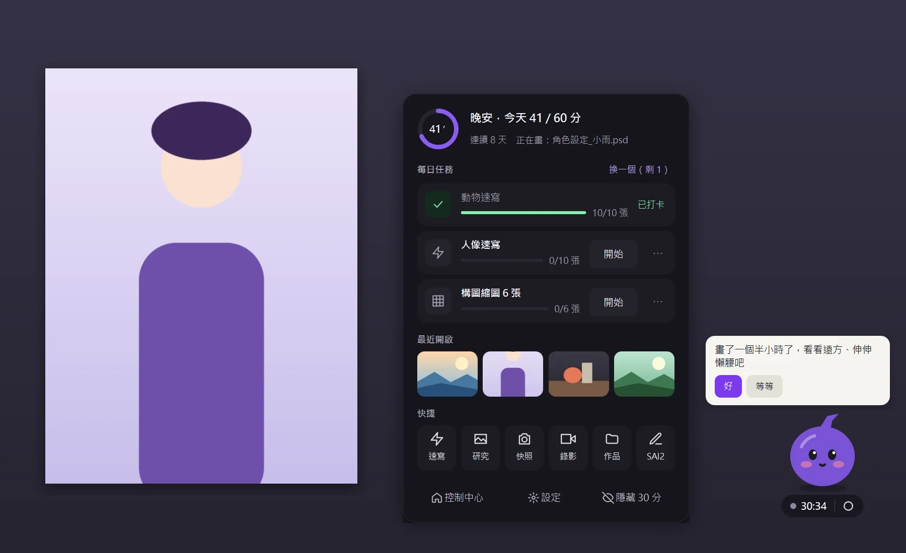
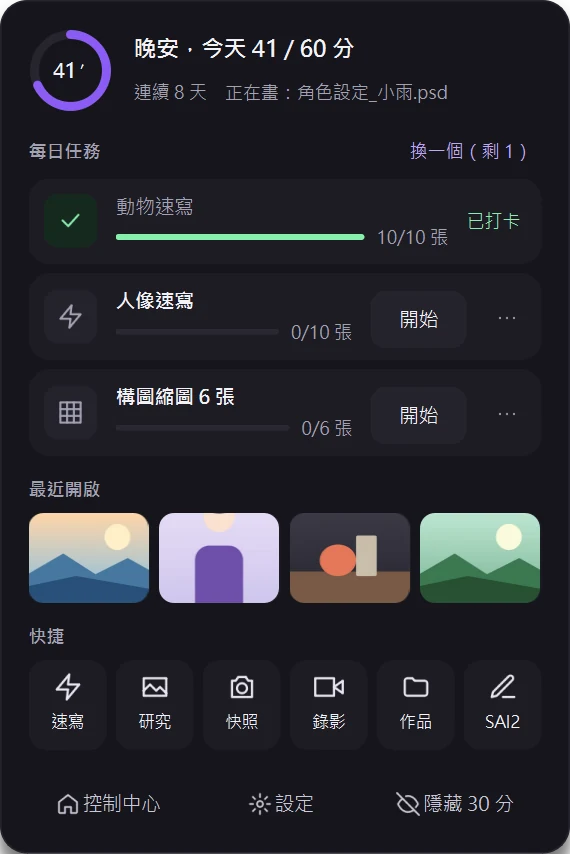
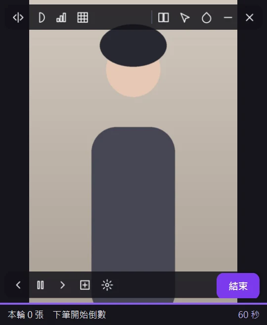
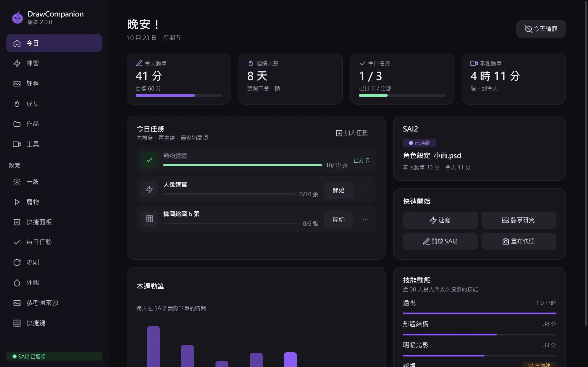
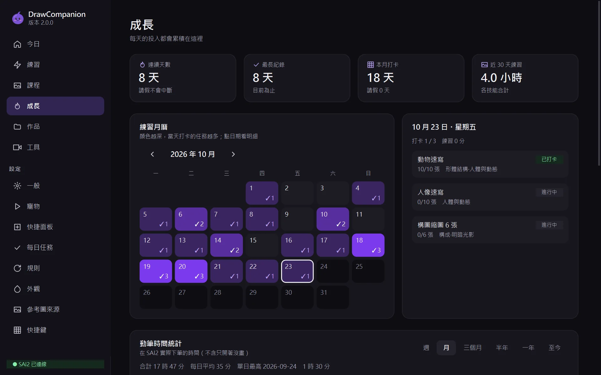
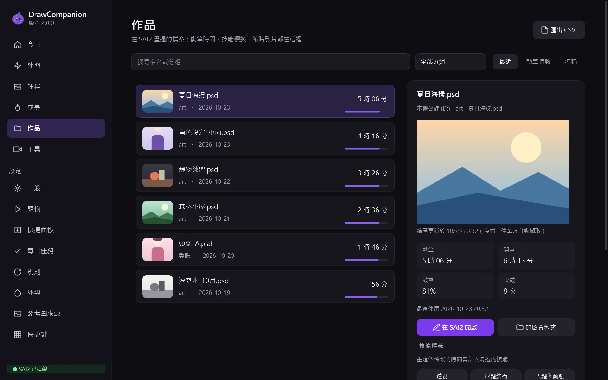
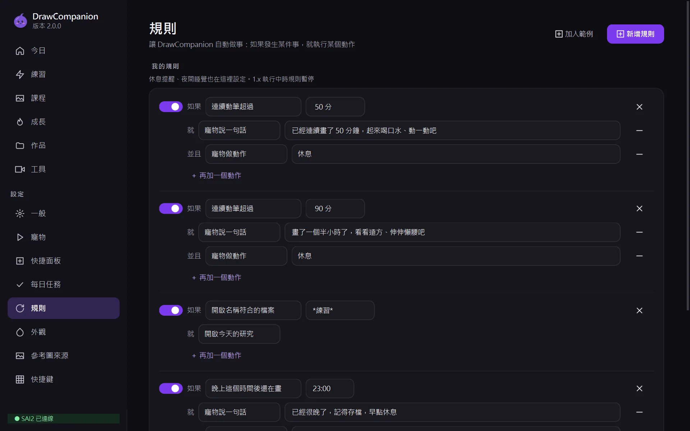
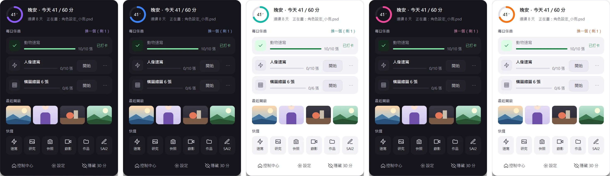
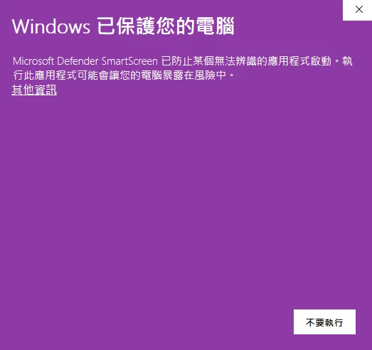

桌面寵物 × 快捷面板
點一下墨墨，常用的都在這
啟動後桌面只會出現墨墨，可以拖到任何地方。點一下打開快捷面板：
- 今日進度：今天畫了幾分鐘、連續幾天
- 每日任務：開始、繼續、打卡
- 最近開啟：作品縮圖，點了直接在 SAI2 開啟
- 快捷按鈕：速寫、臨摹、快照、縮時錄影…可以自己換
墨墨會依 SAI2 的狀態切換動作，畫太久會提醒你休息；寵物下方顯示本次動筆時間與錄影開關。
DrawCompanion 會在 PaintTool SAI2 旁邊安靜地陪著你：自動記錄每張作品畫了多久、每天排好練習任務，速寫和臨摹的參考圖用小窗開著，不占你的畫布。
Windows 10／11 · 免安裝，下載就能用 · 不需要 Python

偵測 SAI2 正在畫哪個檔案，只計算真正下筆的時間；不用按開始、也不會忘記按停止。
依你想練的技能排好速寫、臨摹、反覆練習；完成就打卡，連續天數與技能成長一目了然。
平常只有一隻小寵物；參考圖是可以穿透滑鼠的小窗，單螢幕也能一邊看一邊畫。
以下都是 2.0 測試版的實際畫面（範例資料）
啟動後桌面只會出現墨墨，可以拖到任何地方。點一下打開快捷面板：
墨墨會依 SAI2 的狀態切換動作，畫太久會提醒你休息；寵物下方顯示本次動筆時間與錄影開關。


主視窗的「今日」頁整理今天的動筆時間、每日任務、本週動筆長條圖與技能動態，也會提醒你哪些技能太久沒練。





免安裝，三步就好
點這裡下載 DrawCompanion2.exe（約 35 MB）。
放在任何資料夾。紀錄、設定、縮圖和影片都存在這個資料夾，要搬家時整個資料夾一起搬。
桌面出現墨墨就完成了。打開 SAI2 開始畫，其他設定都有預設值，用到時才會提醒你。
這是正常的，按兩下就能繼續。之後再開啟就不會出現了。
這個視窗（顏色會跟著你的 Windows 主題色）是 Windows 內建的 Microsoft Defender SmartScreen。它會擋下「下載人數還不多、而且沒有數位簽章」的程式。DrawCompanion 是個人開發的免費工具，沒有購買每年數百美元的程式碼簽章憑證，測試版下載的人也還不多，所以 Windows 還「不認識」它。這不是偵測到病毒，視窗裡也沒有說找到任何威脅。

DrawCompanion2.exe，按「仍要執行」另一個方法：在 exe 上按右鍵 →「內容」→ 勾選下方的「解除封鎖」→ 確定，之後雙擊就不會再跳出提醒。公司或學校電腦若被管理員鎖定、沒有「仍要執行」按鈕，就需要請管理員協助。
每一版修了什麼，方便你決定要不要更新
更新方式：下載新版 DrawCompanion2.exe 覆蓋舊的就好，紀錄與設定都會保留。
修正新版 SAI2（2026-10）的檔案路徑問題。用新版 SAI2 的人請一定要更新。
2.0 是全新改寫的版本，正在找實際用 SAI2 畫畫的人一起測試。好用、難用、看不懂、壞掉，都想聽。
不再提供：筆刷工坊與液化（新版 SAI2 已內建素材登錄與網格變形）。介面目前只有繁體中文。
不需要。DrawCompanion2.exe 已經包含執行需要的所有東西，下載後直接執行。只有縮時錄影合成影片時需要另外安裝 ffmpeg。
那是 SmartScreen 對「沒有數位簽章、下載人數還少」的程式的提醒，不是偵測到病毒。程式碼完全公開，按「其他資訊 → 仍要執行」即可；詳細步驟見 第一次執行。
不會。紀錄、作品縮圖、設定都只存在你的電腦（程式所在的資料夾）。程式只有在抓參考圖時才會連線到圖庫（大都會博物館、芝加哥藝術博物館、Unsplash、Pexels），不會收集或傳送你的使用資料。
預設是「下筆時才倒數」：要在 SAI2 已存檔的畫布上下筆才會倒數，停筆看參考圖時會暫停。開始速寫時會自動建立並開啟一張畫布；想改成一直倒數，到小窗的速寫設定或「設定 → 參考圖來源 → 練習畫布」關閉。
可以把墨墨拖到任何地方；動筆時它會自動變半透明。快捷面板裡的「隱藏 30 分」可以暫時收起來，系統匣圖示隨時叫回來。
可以。到「設定 → 寵物 → 角色工作室」建立新角色，指定各狀態的圖檔即可；建議 512×512 透明背景的 APNG 或 WebP。做好的角色包可以匯出分享給其他人。